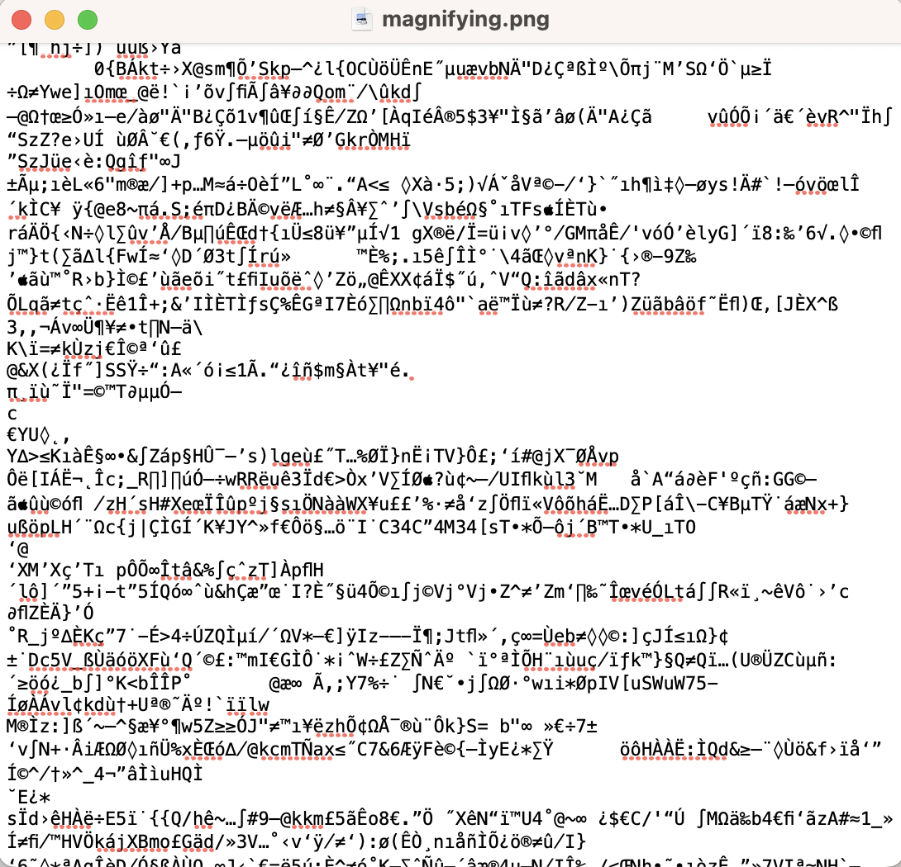
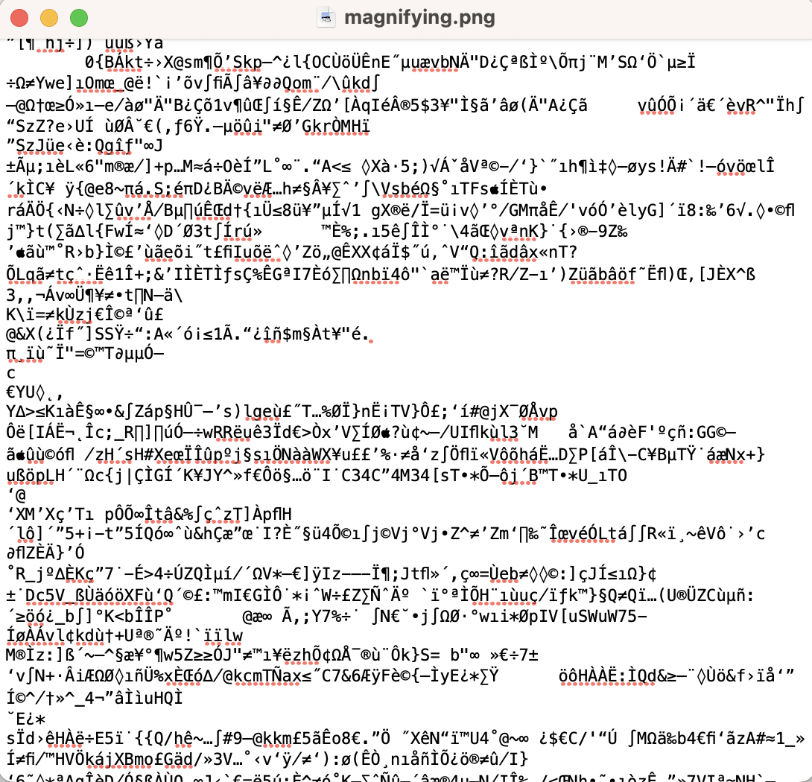
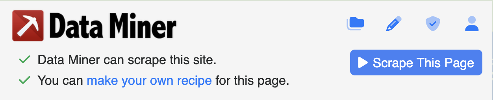

Week 7: Web Data
Emily Graber
Goals
- Website structure
- Gathering content off the web
- Gathering data about web usage
- Google Analytics
Website structure
- structured text
Raw File Types
- HTML - Hypertext Markup Language
- CSS - Cascading Style Sheets
- XML - Extensible Markup Language
- (also javascript for coding interactions with buttons, and dynamically loading content)
Examples
- HTML
- notice tags
<p></p>,<div></div> - content is inside of tags
- not WYSIWYG like MS Word documents
- notice tags
- CSS
- notice metadata marking things like font names and colors
- “font-family:”
- “color:”
- https://quarto.org/docs/output-formats/html-themes.html
- notice metadata marking things like font names and colors
- XML
- hierarchical (nested structure)
- tagged metadata
- (javascript)
https://www.oreilly.com/library/view/xml-in-a/0596007647/ch01s05.html
Metadata
Applications like your browser need to know metadata about content.
- what kind of content is it?
- if it is a paragraph, it should be rendered one way
- if it is an image, it should be rendered a different way
- if it is a url, it should be clickable
Example
 

Other Markup
- LaTeX - Compiled Markup, often used for rendering mathematical expressions
- markdown
Rendered version
Report for Data Exploration
Introduction
Data was explored using different chart types.
Methods
Matplotlib functions for making line charts, boxplots, and historgrams were used.
Summary of Website Structure
- websites use structured texts that can be rendered
- metadata tags are everywhere
- metadata tags describe the data and can be used to locate data
Gathering content off the web
- discovery
- crawling
- indexing
- scraping
How Things End Up in Search Engine Results
search engine bots, aka crawlers or spiders, need to know about all the pages on a website and all the content on the pages in order to make it indexable, i.e. usable for web searching.
A Google bot has to discover webpages, crawl them, index them, and query a giant database to return related content to search terms.
Discovery
- done with robots.txt
- sitemaps
robots.txt
robots.txt
- directives tell bots where to go / not go (“disallow”)
- helps protect information (in theory) on admin pages or other private pages
- helps keep search engine results relevant
- could prevent duplication if duplicate information is on a website
- includes links to sitemaps!
Sitemaps
- lists out all pages (unique urls) of a website that should be indexed
- these can be used to scrape information off a website
- large websites may have multiple site maps
Sitemaps

https://markitors.com/what-is-a-sitemap/
Participation
- how many sitemaps does Facebook have?
- how many sitemaps does Allegheny have?
- Walmart?
- On another sharable site, see what you find and post a sitemap in Discord!
Crawling
Indexing
Scraping
- regular people (not Google) can also get content off the web by using strategies similar to discorvery, crawling, and indexing.
Scrapping tools
- Code: Requests, BeautifulSoup
- Applications:

Credit: Octoparse
Data Miner
Optional Activity
- Try to get a csv file from dataminer
- click on
make your own recipe - 
- click on
- name it
data-scraping-activity.csv - upload to your activities repo
Summary of gathering content off the web
- thanks to structured text on the web, scraping code or programs can gather information and turn it into useable data for exploration.